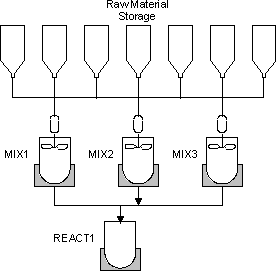

Process cell
A process cell consists of all the production and supporting equipment necessary to make a batch. In the DeltaV system, you define a process cell class to set properties that are inherited by all process cell instances. Process cell instances contain the equipment-specific settings for the process cell.
The S88 standard defines three types of process cell structures:
Single path - defines a group of units through which a batch passes sequentially
Multiple path - defines several single path structures in parallel, with no product transfer between them
Network - defines paths that can be either fixed or variable; if variable, the path is determined at batch run time.
The DeltaV system supports all three types of process cell structures.
The following figure shows a process cell for an example batch plant making paint. This process cell is a multi-product, network path structure.

In making this product, regardless of the grade, the batch always follows one of three possible paths. Raw material ingredients are first transferred into two mixers, where they are agitated. Next, the ingredients from the mixers are transferred into the reactor unit, where they are combined to produce the final product. In this scenario, the mixers are interchangeable and are chosen by the operator at batch run time.